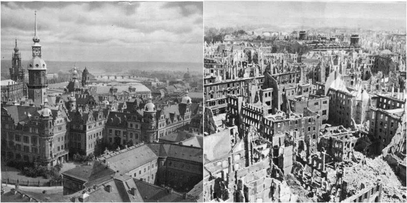
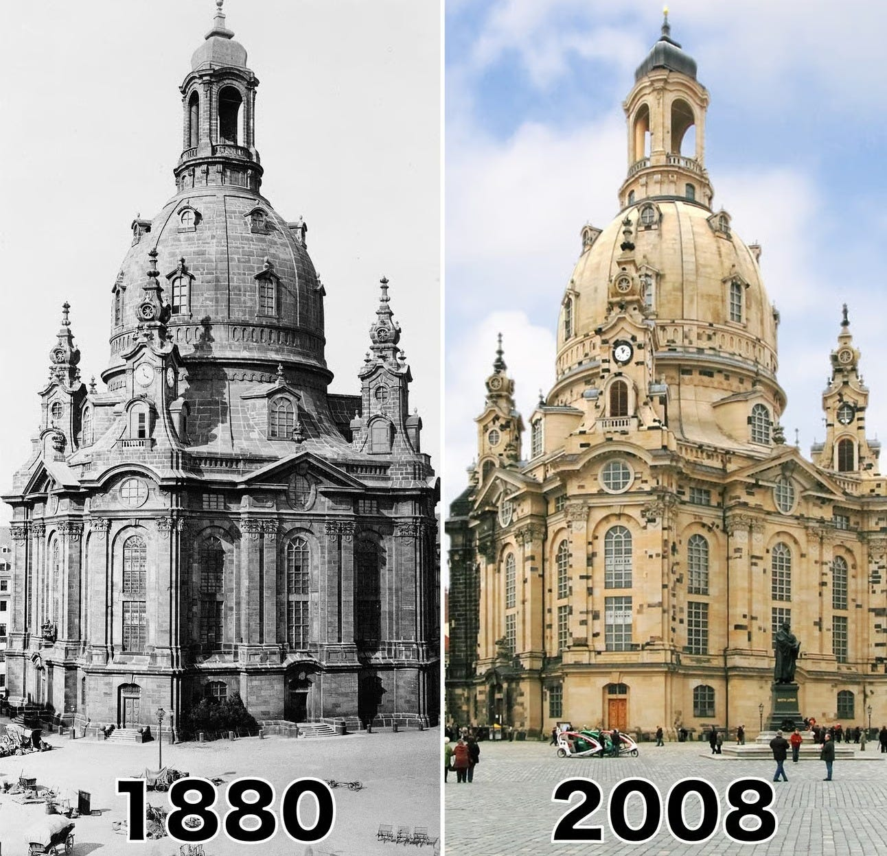
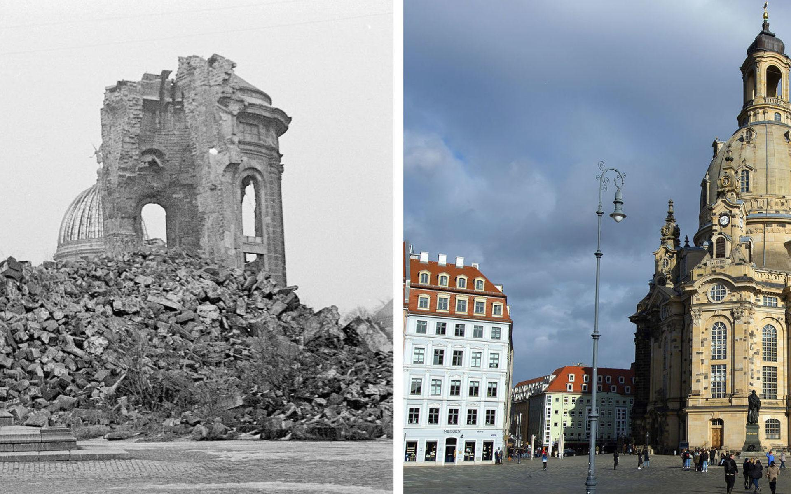
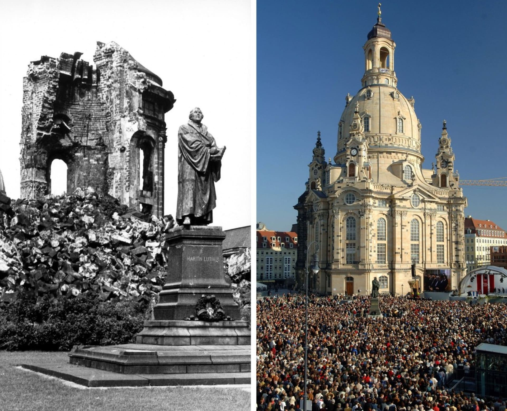
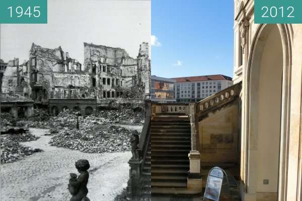

INVESTIGACIÓN HISTÓRICA

Una reflexión sobre la guerra, las víctimas civiles y la justicia.
01 - INTRODUCCIÓN

Dresde era una ciudad ubicada al este de Alemania, junto al río Elba. Era conocida por su arquitectura, sus edificios históricos y su riqueza cultural.
Dresde tenía importancia estratégica, industrial y cultural.
02 - FEBRERO DE 1945

Entre el 13 y el 15 de febrero de 1945, las fuerzas aéreas británicas y estadounidenses realizaron ataques sobre la ciudad de Dresde.
03 - CONSECUENCIAS

El bombardeo destruyó gran parte del centro de Dresde. Numerosas viviendas, edificios históricos y comercios quedaron destruidos o gravemente dañados.
Miles de personas perdieron sus hogares y pertenencias.
Iglesias, monumentos y edificios históricos sufrieron graves daños.
La población sufrió desplazamiento y dificultades para recuperar su vida cotidiana.
04 - VÍCTIMAS CIVILES
Según la comisión histórica de Dresde, el número de fallecidos llegó hasta aproximadamente 25.000 personas.
Entre las víctimas había habitantes de la ciudad y refugiados que buscaban protección.

Después de la guerra comenzó un largo proceso de reconstrucción. Se recuperaron edificios históricos, viviendas e infraestructuras.
La reconstrucción de Dresde representó la recuperación de una ciudad y la conservación de su memoria histórica.
05 - REFLEXIÓN FINAL
El bombardeo de Dresde fue uno de los acontecimientos más devastadores de los últimos meses de la guerra en Europa.
Su destrucción provocó la pérdida de miles de vidas, la desaparición de importantes edificios históricos y un profundo sufrimiento para la población civil.
Este acontecimiento también nos invita a reflexionar sobre los límites de la guerra, la responsabilidad de quienes toman decisiones y la importancia de proteger a la población civil.
La historia de Dresde nos recuerda que ninguna victoria puede borrar el sufrimiento de las víctimas.
Recordar la historia es aprender de ella para construir un futuro mejor.